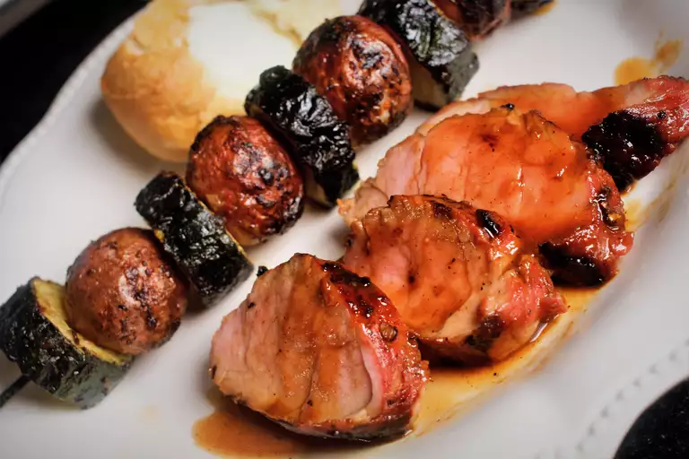

Marinated Grilled Pork Tenderloin

A Tasty Grilled Pork Loin
This delicious marinated pork tenderloin is an easy cook on the grill. It's best when it's marinated for 24 hours.
Ingredients
Marinade
- ¼ cup oyster sauce
- ¼ cup soy sauce
- ¼ cup honey
- 4 teaspoons minced fresh ginger root
- 1 tablespoon chopped fresh parsley
- 1 tablespoon minced garlic
- ¼ teaspoon onion powder
- ¼ teaspoon cayenne pepper
- ¼ teaspoon ground cinnamon
- 2 tablespoons brown sugar
- 1 tablespoon ketchup
Pork
- 2 12-ounce pork tenderloins
Steps:
- Whisk together honey, oyster sauce, soy sauce, ginger, brown sugar, ketchup, garlic, parsley, onion powder, cayenne pepper, and cinnamon in a medium bowl. Pour the mixture into a resealable plastic bag.
- Place pork tenderloins into the bag with the marinade, squeeze out excess air, and seal the bag. Marinate in the refrigerator for 12 to 24 hours.
- Preheat the grill to medium heat and lightly oil the grate.
- Remove pork tenderloins from marinade and shake off excess. Discard remaining marinade.
- Cook pork tenderloins on the preheated grill until no longer pink in the center (20 to 30 minutes) turning occasionally. An instant-read thermometer inserted into their center should read at least 145 degrees F (63 degrees C).